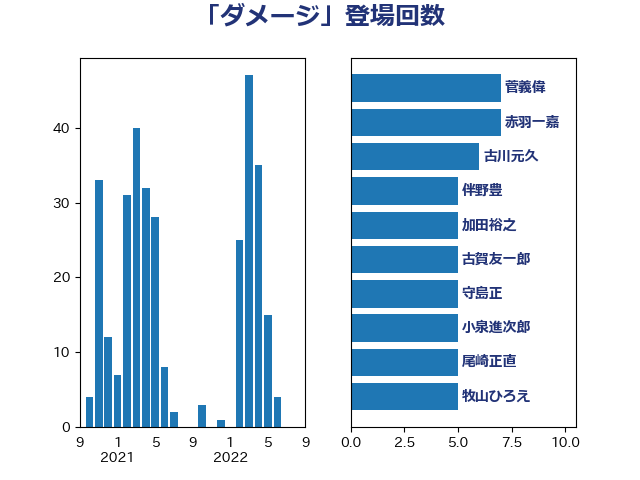

単語「ダメージ」

| 菅義偉 | 自由民主党 | 7 回 |
| 赤羽一嘉 | 公明党 | 7 回 |
| 古川元久 | 国民民主党 | 6 回 |
| 伴野豊 | 立憲民主党 | 5 回 |
| 加田裕之 | 自由民主党 | 5 回 |
| 古賀友一郎 | 自由民主党 | 5 回 |
| 守島正 | 日本維新の会 | 5 回 |
| 小泉進次郎 | 自由民主党 | 5 回 |
| 尾崎正直 | 自由民主党 | 5 回 |
| 牧山ひろえ | 立憲民主党 | 5 回 |
| 西村康稔 | 自由民主党 | 5 回 |
| 串田誠一 | 日本維新の会 | 4 回 |
| 坂本哲志 | 自由民主党 | 4 回 |
| 山崎正恭 | 公明党 | 4 回 |
| 杉久武 | 公明党 | 4 回 |
| 音喜多駿 | 日本維新の会 | 4 回 |
| 塩村あやか | 立憲民主党 | 3 回 |
| 山田勝彦 | 立憲民主党 | 3 回 |
| 庄子賢一 | 公明党 | 3 回 |
| 東徹 | 日本維新の会 | 3 回 |
| 武田良太 | 自由民主党 | 3 回 |
| 浮島智子 | 公明党 | 3 回 |
| 源馬謙太郎 | 立憲民主党 | 3 回 |
| 田村まみ | 国民民主党 | 3 回 |
| 田村貴昭 | 日本共産党 | 3 回 |
| 礒崎哲史 | 国民民主党 | 3 回 |
| 福山哲郎 | 立憲民主党 | 3 回 |
| 秋本真利 | 自由民主党 | 3 回 |
| 篠原豪 | 立憲民主党 | 3 回 |
| 芳賀道也 | 国民民主党 | 3 回 |
| 萩生田光一 | 自由民主党 | 3 回 |
| 階猛 | 立憲民主党 | 3 回 |
| 青柳仁士 | 日本維新の会 | 3 回 |
| ながえ孝子 | 無所属 | 2 回 |
| 井林辰憲 | 自由民主党 | 2 回 |
| 伊佐進一 | 公明党 | 2 回 |
| 古賀之士 | 立憲民主党 | 2 回 |
| 吉良よし子 | 日本共産党 | 2 回 |
| 國重徹 | 公明党 | 2 回 |
| 小林鷹之 | 自由民主党 | 2 回 |
| 山岸一生 | 立憲民主党 | 2 回 |
| 岡本あき子 | 立憲民主党 | 2 回 |
| 川合孝典 | 国民民主党 | 2 回 |
| 平木大作 | 公明党 | 2 回 |
| 徳永エリ | 立憲民主党 | 2 回 |
| 本村伸子 | 日本共産党 | 2 回 |
| 松原仁 | 立憲民主党 | 2 回 |
| 梶山弘志 | 自由民主党 | 2 回 |
| 森山浩行 | 立憲民主党 | 2 回 |
| 渡辺周 | 立憲民主党 | 2 回 |
| 渡辺猛之 | 自由民主党 | 2 回 |
| 緑川貴士 | 立憲民主党 | 2 回 |
| 菅家一郎 | 自由民主党 | 2 回 |
| 足立敏之 | 自由民主党 | 2 回 |
| 野田国義 | 立憲民主党 | 2 回 |
| 高橋千鶴子 | 日本共産党 | 2 回 |
| 高階恵美子 | 自由民主党 | 2 回 |
| おおつき紅葉 | 立憲民主党 | 1 回 |
| たがや亮 | れいわ新選組 | 1 回 |
| 三浦信祐 | 公明党 | 1 回 |
| 上田清司 | 国民民主党 | 1 回 |
| 世耕弘成 | 自由民主党 | 1 回 |
| 中司宏 | 日本維新の会 | 1 回 |
| 中川宏昌 | 公明党 | 1 回 |
| 伊藤渉 | 公明党 | 1 回 |
| 佐々木さやか | 公明党 | 1 回 |
| 佐藤英道 | 公明党 | 1 回 |
| 加藤勝信 | 自由民主党 | 1 回 |
| 古屋範子 | 公明党 | 1 回 |
| 和田義明 | 自由民主党 | 1 回 |
| 塩川鉄也 | 日本共産党 | 1 回 |
| 塩田博昭 | 公明党 | 1 回 |
| 大塚耕平 | 国民民主党 | 1 回 |
| 大島敦 | 立憲民主党 | 1 回 |
| 安江伸夫 | 公明党 | 1 回 |
| 宮本周司 | 自由民主党 | 1 回 |
| 宮本徹 | 日本共産党 | 1 回 |
| 寺田静 | 無所属 | 1 回 |
| 小渕優子 | 自由民主党 | 1 回 |
| 尾身朝子 | 自由民主党 | 1 回 |
| 山下芳生 | 日本共産党 | 1 回 |
| 山下貴司 | 自由民主党 | 1 回 |
| 山井和則 | 立憲民主党 | 1 回 |
| 山口壯 | 自由民主党 | 1 回 |
| 山谷えり子 | 自由民主党 | 1 回 |
| 岡本三成 | 公明党 | 1 回 |
| 岩渕友 | 日本共産党 | 1 回 |
| 岬麻紀 | 日本維新の会 | 1 回 |
| 岸信夫 | 自由民主党 | 1 回 |
| 川田龍平 | 立憲民主党 | 1 回 |
| 平山佐知子 | 無所属 | 1 回 |
| 後藤祐一 | 立憲民主党 | 1 回 |
| 斉藤鉄夫 | 公明党 | 1 回 |
| 朝日健太郎 | 自由民主党 | 1 回 |
| 本田顕子 | 自由民主党 | 1 回 |
| 東国幹 | 自由民主党 | 1 回 |
| 松川るい | 自由民主党 | 1 回 |
| 梅村みずほ | 日本維新の会 | 1 回 |
| 梅谷守 | 立憲民主党 | 1 回 |
| 櫛渕万里 | れいわ新選組 | 1 回 |
| 櫻井周 | 立憲民主党 | 1 回 |
| 江島潔 | 自由民主党 | 1 回 |
| 泉田裕彦 | 自由民主党 | 1 回 |
| 浅野哲 | 国民民主党 | 1 回 |
| 浜口誠 | 国民民主党 | 1 回 |
| 浜田聡 | NHK党 | 1 回 |
| 浜野喜史 | 国民民主党 | 1 回 |
| 海江田万里 | 立憲民主党 | 1 回 |
| 漆間譲司 | 日本維新の会 | 1 回 |
| 甘利明 | 自由民主党 | 1 回 |
| 田中健 | 国民民主党 | 1 回 |
| 田嶋要 | 立憲民主党 | 1 回 |
| 田村憲久 | 自由民主党 | 1 回 |
| 田村智子 | 日本共産党 | 1 回 |
| 畦元将吾 | 自由民主党 | 1 回 |
| 石原正敬 | 自由民主党 | 1 回 |
| 石川大我 | 立憲民主党 | 1 回 |
| 細野豪志 | 自由民主党 | 1 回 |
| 美延映夫 | 日本維新の会 | 1 回 |
| 羽生田俊 | 自由民主党 | 1 回 |
| 羽田次郎 | 立憲民主党 | 1 回 |
| 藤田文武 | 日本維新の会 | 1 回 |
| 近藤昭一 | 立憲民主党 | 1 回 |
| 鈴木敦 | 国民民主党 | 1 回 |
| 鈴木義弘 | 国民民主党 | 1 回 |
| 鎌田さゆり | 立憲民主党 | 1 回 |
| 長妻昭 | 立憲民主党 | 1 回 |
| 青山大人 | 立憲民主党 | 1 回 |
| 須藤元気 | 無所属 | 1 回 |
| 馬場雄基 | 立憲民主党 | 1 回 |
| 高木かおり | 日本維新の会 | 1 回 |
| 高橋はるみ | 自由民主党 | 1 回 |